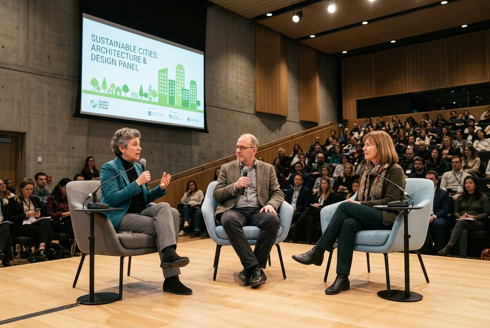
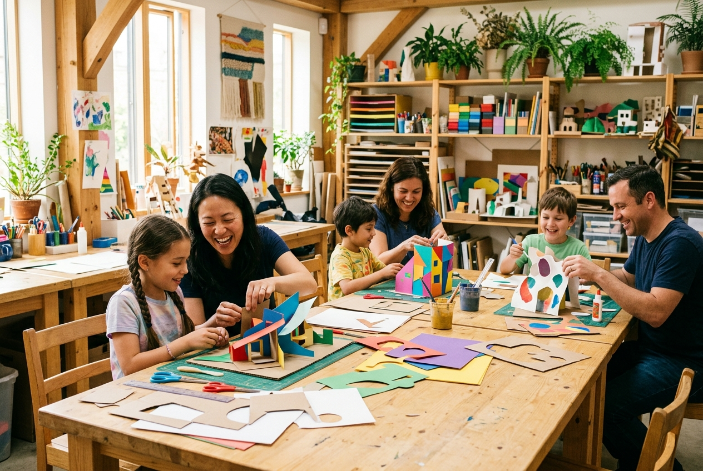
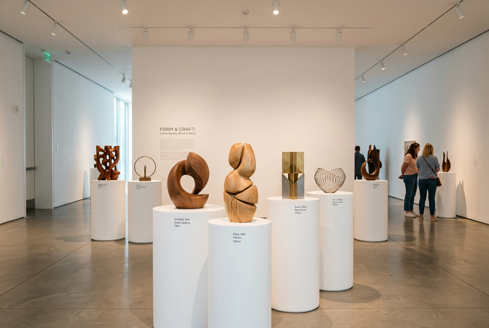

熱門推薦
專業工作坊
桃園市城市創意中心致力於推動在地文化創新、青年設計能量與跨界科技藝術。我們打造一座開放、互動且具啟發性的公共交流場域，集結設計展覽、前瞻工作坊、共創聚落與公共論壇，讓每位走進中心的市民與創作者，都能在這裡發現城市進化的嶄新可能。

開放報名 名家講座
剩餘名額 5位 親子美育
免費參觀 主題特展提供迅速流暢的數位便民服務，從線上活動預約、館舍空間參訪到最新藝文快訊一手掌握。
探索建築空間美學、樓層展區分布、共創實驗室與開放時段。體驗當代設計與光影的對話。
掌握中心即時展演動態、藝文快訊與市民共創計畫公告。連結國際策展脈動與地方文化活力。